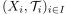
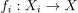
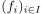
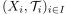
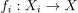
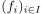
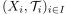
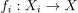
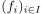

Existenz einer eindeutigen Finaltopologie
1. Satz
Sei  eine Menge und  eine Familie von Topologien mit zugehörigen Abbildungen 
Dann existiert eine Finaltopologie bezüglich 
eine Menge und  eine Familie von Topologien mit zugehörigen Abbildungen 
Dann existiert eine Finaltopologie bezüglich 
Sei eine Menge und  eine Familie von Topologien mit zugehörigen Abbildungen 
Dann existiert eine Finaltopologie bezüglich 